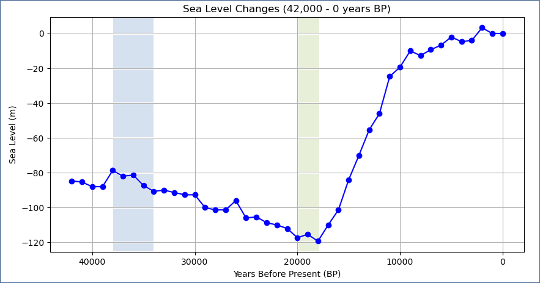
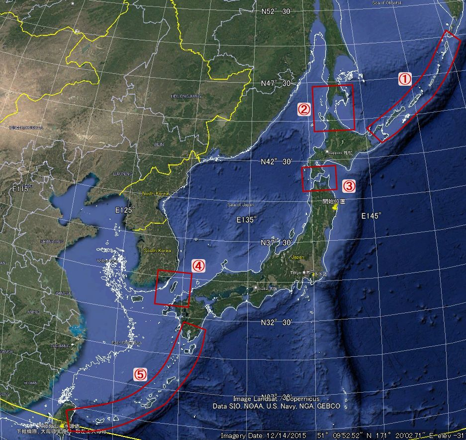
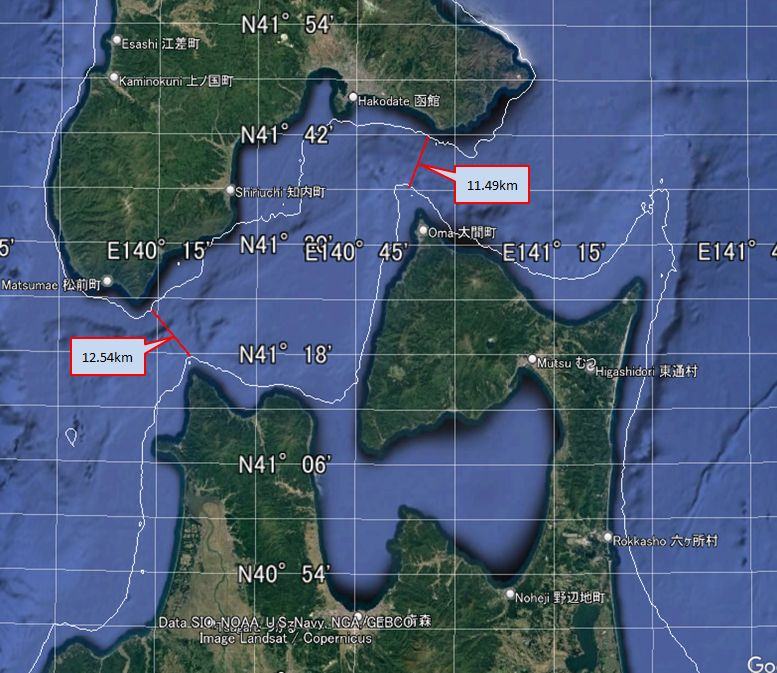
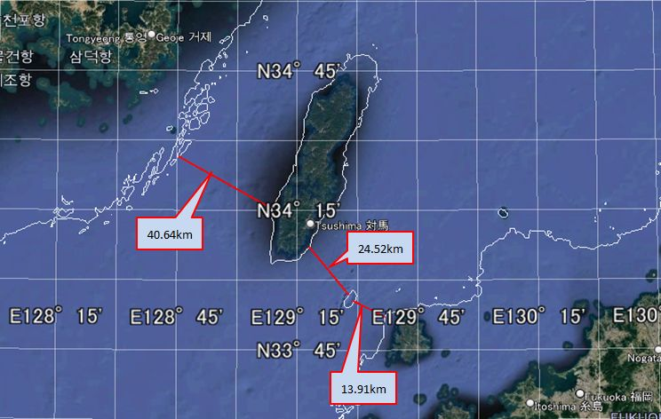
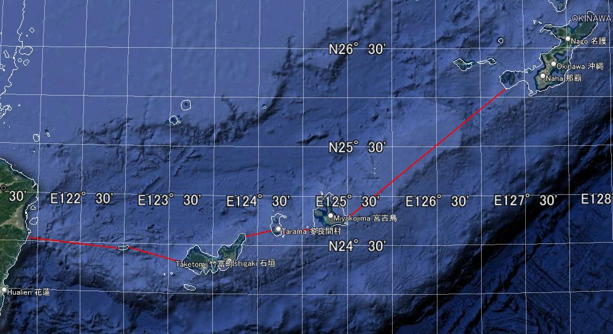
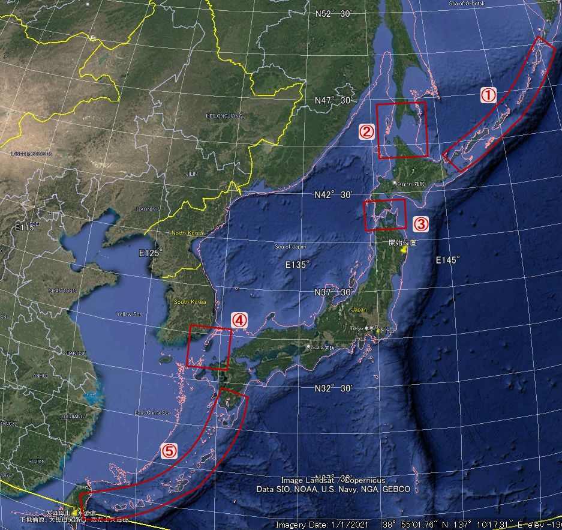
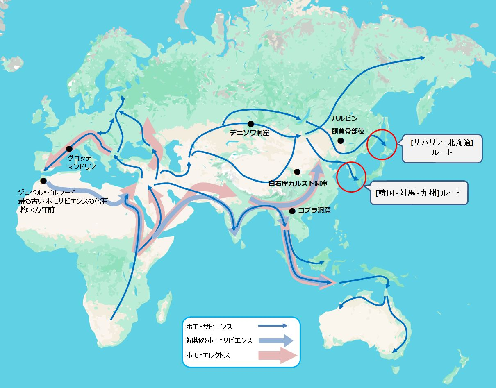

38,000年前の航海民
「Googleマップで2万年前の日本地図が見える、すごい使い方...」 -[1] というYouTubeを見ました。 google mapで直接表示させるのではなく、 2万年前は現在より、140m程海抜が低く大陸棚が地表に現れていたことを想像してほしい...そのような内容だったと記憶しています。 かなりアバウトな説明でしたが、発想としては面白いなと思いました。
話はがらりと変わります。 相当前なのですが、 縄文時代 よりも前に伊豆諸島の神津島から 黒曜石 が伊豆半島や房総半島に舟で運ばれていたという記事を読んだ記憶があるのです。
妻が新聞で件の記事を読み、 「すごいね、大昔に神津島から黒曜石が舟で伊豆や房総に運ばれていたんだって。」 と、私に伝えました。 私も渡された記事を読みました。 詳しくは記憶していないのですが、 何万年も前に神津島から黒曜石が舟で日本各地に運ばれていたという内容だったと思います。 その時は、「話半分」、或いは「ガセ」ではないかという気持ちが強かったのですが 註1、 何故か、いつまでも頭から離れずに残っていました。
Googleマップで2万年前の日本地図が見える、すごい使い方... [1]を見て、 もしかしたら神津島の黒曜石は海抜が下がっていた時期に、 舟を使わずに運ばれたのではないかと思いました。
もやもやした気持ちを吹っ切ろうと思って、"神津島", "黒曜石" を手始めに、いろいろと調べて見ました。 冒険の始まりです。
1. 時代は38,000年前
"神津島 黒曜石" で検索すると、 コンテンツに37500年前とか38,000年という文字列が含まれたサイトがぞろぞろと出てきました。 38,000年前というキーワードは、約38,000年前の遺跡から出土した黒曜石が神津島産だったとするもので、 日本各地の遺跡から発掘されているとのことです。
参考として、幾つかのサイトを上げておきます。
神津島石蔵公式サイト（Stone Warehouse） | 神津島のパワー ...
「石」が好きすぎて…島に移住「とにかく飽きない」人生 ...
何万年も前とうっすら記憶していた時期は、38,000年前を指していたことが分かりました。 新聞で読んだ記事は「話半分」でも「ガセ」でもなく、本当のことを書いていたのだと理解することができました。
2. 黒曜石は舟で運ばれていた 註2
もう少し詳しいサイトがないかと、検索に "航海" も加えてみました。 すると ｢世界最古の往復航海 - researchmap｣ -[2] が目に止まりました。 クリックするとwebページに飛ぶのではなく、pdfがダウンロードされました。 明治大学黒曜石研究センターの 池谷信之 氏による岩波書店「科学」の特集論文で、 38,000年前に神津島から舟を往復させて黒曜石を伊豆半島へ運んだとする考察が、 科学的根拠を基に詳しく述べられていました。
池谷氏 [2] によれば、38,000年前という時代は、旧石器時代後期にあっても比較的温暖であり、 海抜は今より80m程低かったとされています。しかし、80m低くても神津島と伊豆半島の間には、 水深が800mに達するところがあり、黒曜石は舟で運ばざるを得なかったと指摘されています。
Googleマップで2万年前の日本地図が見える、すごい使い方... [1]を参考にGoogleマップを開いてみました。 Googleマップでは海洋の深度はある程度グレードーションで分かるのですが、深さの単位が1mとか10mになるとお手上げでした。 Googleマップで分かるのは深そうなのか、浅そうなのかくらいでした。 海抜が現在より80m低かった状況はGoogleマップを見ても想像できませんでした。 私は "Google Earth Pro" でも調べて見ましたが、同じ結果でした。 しかし、"Google Earth Pro" は然るべきデータをインポートすれば、等深線を表示させることができることを知りました。 過去の海抜が分かれば、それを等深線でプロットすることで、当時の海岸線を再現することができそうです 註3。
そこで私は当時の地理的状況を調べたいと思い、過去の海抜の変化と等深線を提供しているサイトを探しました。
海抜の変化については、 NOAA(National Oceanic and Atmospheric Administration) Paleoclimatology(米国海洋大気庁 古気候学) -[3]から、データを検索しました。
入手したデータソースは以下の通りです。 このファイルには900万年前から現在までの海抜データが千年単位で記録されています。
以下の図はMillerのデータに基づいて42000年前から現在までの海抜をプロットしたものです。

図2-1 : 42000年前から現在までの海抜
図2-1 の薄青色の帯の左端が38,000年前の海抜を示しています。 確かに38,000年前の海抜は、現在より80mほど低かったことが分かります。 薄青色と薄緑色の2つの帯については、それぞれ ｢5. 航海民はそのまま日本に居続けたのか｣ と ｢3. 2万年前は現在より120mも海抜が下がっていた｣ で説明します。
次は等深線です。こちらは、 GEBCO(The General Bathymetric Chart of the Oceans) data downloadにアクセスし、 目的の海域のデータを取得しました。ただし、 このデータのままでは "Google Earth Pro" にインポートすることができなかったので、 Geographic Information System の1つである QGISダウンロードサイトからデスクトップ版をインストールして、 "Google Earth Pro" にインポートできるデータに変換しました。 QGISでは、水深80m, 120m, 140m の3つのデータセットを作り、 "Google Earth Pro" にインポートしました。
以下の図は伊豆半島、神津島、房総半島を含む範囲の海抜が80m低かった状態を示しています。 陸地の周りの白い等深線が、当時は陸地だったことを意味します。 38,000年前は、現在より陸地の範囲が広かったことが分かります 註3。

図2-2 : 38,000年前の伊豆半島、神津島、房総半島を含む範囲
図2-2 から分かるように、当時の神津島は西側の小さい島と陸続きになっています。 黒曜石は、現在は"恩馳 (おんばせ) 島"と呼ばれているこのエリアで産出されたとされています。
海抜が現在より80m低くても、神津島と伊豆半島は最短距離を結んでも、40km弱の距離があります。 黒曜石を運ぶには舟が必須であったことが分かります。
この運搬ルートについて池谷氏の特集論文 [2] は、 海流の影響などを提示して、舟を操るには高度な航海術が必要であったと述べられています。 特に強調されていたのは、伊豆半島から神津島へ、神津島から伊豆半島への往復航海が行われていた点についてです。
ところで、38,000年前の日本はどういう状況だったのでしょうか。 東京都立大学の 出穂雅実氏によると ｢日本列島に最初に渡来した現生人類とは？｣の中で、次のように述べられています。
日本列島にある最も古い遺跡は、3万8000年前に出現しています。
また、3万8000年前に位置づけられる遺跡が、東北から琉球半島までの広い範囲に分布していますから、
この時期に現生人類の日本列島への植民が果たされたのは確実といえます。
池谷氏も特集論文 [2] の中で次のように述べられています。
...約3万8000年前に遡るものであった。列島に現生人類が到達し,
後期旧石器時代が開始された時期にほぼ重なる。
つまり彼らは列島へ展開するのとほとんど同時に,
伊豆半島 - 神津島間の往復航海を果たしていることになるのである。
ここで、38,000前の日本全土と周辺の地図を示したいと思います。

図2-3 : 38,000年前の日本全土と周辺の地図
80mの白い等深線の範囲内が当時の陸地です。 人類が日本列島に到達したと思われるルートも示しています。
②の宗谷海峡については北海道とサハリンが陸続きになっています。そして、サハリンは大陸とつながっています。 しかし、北海道と本州は津軽海峡(③)で分断されています。
一方、①の千島(クリル)列島と⑤の[台湾 - 琉球諸島] ルートは、ほぼ島毎に分断されていることが分かります。 ④の[朝鮮半島 - 対馬 - 九州] ルートもしっかり海で隔てられています。
神津島の黒曜石運搬をメインに据えると、 伊豆半島への到達ルートは、いずれも舟を使わざるを得ないことが分かります。 舟で到達したとすると、以下の3つのルートに絞り込まれると思います。
③の津軽海峡超えは、①[千島(クリル)列島] ルートか、 ②[宗谷海峡] ルートから北海道に渡った後、海峡を舟で越えたと考えられます。 自然なルートとしては、舟を使わずに北海道へ到達できる②ではないでしょうか。
図2-4 は津軽海峡超えのルートを2つ示しています。距離にすると11～13kmほどになります。

図2-4 : 津軽海峡超えのルート
④の[韓国 - 対馬 - 九州] ルートは、 [韓国 - 対馬] が最短でも40km強になります。 その後は、当時は島であったと考えられる地点を経由して九州に至ります。 最初の40kmは相当な距離ですが、神津島と伊豆半島の距離が約40kmなので、 往復航海を行ったと考えられる航海民にとっては。特に問題はなかったのかもしれません。

図2-5 : 韓国 - 対馬 - 九州 ルート
⑤の[台湾 - 琉球諸島 - 九州] ルートは、明らかに最難関ルートと思われます。 台湾から一番近い琉球列島の与那国島でも100kmを超えます。
図は[台湾 - 琉球列島] ルートを示したものです。 島から島への距離は、割愛していますが、宮古島から沖縄本島までは200kmを超えています。

図2-6 : 台湾 - 琉球列島 ルート
ここまで38,000年前に舟で日本列島に到達した、航海民のルートを調べてみました。 舟で渡ることが容易と考えられるのは ③, ④, ⑤ の順になります。
しかし、国立科学博物館人類研究部人類史研究グループ長であった 海部陽介 氏(現在は東京大学総合研究博物館で研究を続けられています)は 3万年前の日本列島への大航海を当時の材料と道具で徹底再現 -[4]の中で、 [台湾 与那国島] ルートの実証実験を行って、2019年7月に成功されています。 実証実験は、当時手に入ると考えられた道具のみを使って舟を作り、渡航したものでした。

図2-7 : 「 3万年前の日本列島への大航海を当時の材料と道具で徹底再現」より引用
更に海部氏は 「人類は謎の存在なんです」――人類進化学者が「3万年前の航海」に挑む理由 -[5]の中で、 以下のように述べられています。
最初に日本に到達したとされるのは、3万8000年ほど前、
朝鮮半島から対馬を経て北部九州へ至った『対馬ルート』だ。
そのあとに、台湾から琉球列島を島伝いに北上する『沖縄ルート』（約3万5000年前）、
大陸の北側からサハリンを通って北海道へと南下する『北海道ルート』（約2万5000年前）が続いたと考えられる。
海部氏が示された年代特定 [5] を、これ以上追いかけきれなかったのですが、 海部氏の考察 [5] に従えば、38,000年前に、日本に到達した航海民は④の [韓国 - 対馬 - 九州] ルート になります。
ここで、池谷氏の特集論文 [2] を再度引用します。
「...約3万8000年前に遡るものであった。列島に現生人類が到達し, 後期旧石器時代が開始された時期にほぼ重なる。 つまり彼らは列島へ展開するのとほとんど同時に, 伊豆半島 - 神津島間の往復航海を果たしていることになるのである。」
以上を考慮すると、38,000年前に航海民は ④の [韓国 - 対馬 - 九州] ルート から日本に渡り、 ほぼ同時期に 伊豆半島 - 神津島 間の往復航海を行っていたということになります。 [韓国 - 対馬] の40kmを渡ることができた航海民であれば、 [伊豆半島 - 神津島] の往復航海ができたのではないかという考察は妥当ではないかと考えられます。
私見になりますが、黒曜石のように、鋭利な道具に加工できる素材は、 当時としては大変貴重なものだったと思います。 このような素材を探して、航海術に長けた人々が日本列島に渡って来たのではないでしょうか。
3. 2万年前は現在より120mも海抜が下がっていた
このページの冒頭で Googleマップで2万年前の日本地図が見える、すごい使い方... [1] なるYouTubeを見たことが、太古の航海民について調べるきっかけになったと記しました。 その中では20000年前の海抜は現在より140m低かったと説明されています。 過去の海抜についてプロットした図2-1 : 42000年前から現在までの海抜で、 20000から18000前(薄緑色の帯)の海抜は現在より120mまで低くなっていることが分かります。 私が掲載したグラフは NOAA [3] から入手したデータの1つに過ぎません。 当時の海抜を140mとしているデータがアーカイブされているかもしれません。
図3-1 は海抜が現在より120m低かったときの日本全土と周辺の地図です。
図3-1 : 20000年前の日本全土と周辺の地図 海抜が現在より120m低かった場合
図3-2 は海抜が現在より140m低かったときの日本全土と周辺の地図です。 海抜が120m低かったときと比較するために掲載します。

図3-2 : 20000年前の日本全土と周辺の地図 海抜が現在より140m低かった場合
海抜が120m低かった場合と140m低かった場合で、それほど差異はないように思えたのですが、 140m低いと津軽海峡が地続きになることに気づきました。 海部氏 [5] は津軽海峡を超えたのは25,000年前と記されています。 25,000年前の海抜は 図2-1 (42000年前から現在までの海抜)から現在より106m低かったので、 20mの幅を考慮しても106～126mと推測されます。 海部氏の説 [5] に従えば、津軽海峡超えには舟が使用されたことになります。 ただし、すぐ先に対岸が見えている程度の距離だったと考えられます。
ここから先は20000年前は海抜が140m低かったと仮定して話を進めたいと思います。 海抜が140m低いと、日本海は巨大な湖になっていることが分かります。 この時期、大陸から日本へは [サハリン - 北海道 - 本州] ルートと、 韓国以南からは容易に九州に渡るルートが開かれていたことになります。
Googleマップで2万年前の日本地図が見える、すごい使い方... [1] では、 「日本列島に人類が渡って来るのに舟は必要なく、陸続きで渡って来られた」と説明されています。 確かに20000年前は歩いて渡って来れたのです。
図2-1 (42000年前から現在までの海抜) を見ると38,000年前から20000年前までは ほぼリニアーに海抜が下がっていることが分かります。 約20000年前は 最終氷河期と一致します。 おそらくこの時期、大陸から日本へ多くの人々が渡って来たものと考えられます。
日本旧石器学会(JPRA: Japanese Palaeolithic Research Association)の 日本列島の旧石器時代遺跡では、35000年前から10000年前までの遺跡のデータを辿ることができます。
ところで、池谷氏の
｢世界最古の往復航海 - researchmap｣[2]
の中に気になる記述があります。以下、その引用です。
井出丸山遺跡に始まる神津島産黒曜石の中部・関東地方への供給は,
3万8000年へ3万4000年前の約5000年間にわたる。
縄文時代には再び、神津島産の黒曜石が各地の遺跡から出土しているようです。
東京都神津島、恩馳島産黒曜石と砂糠崎産黒曜石のフィッション・トラック年代では
縄文時代になると、伊豆諸島をはじめ南関東・東海地方において、
石鍬やその未成品として多くの恩馳島系の黒曜石製遺物が発見されている。
と記されています。
ただ、縄文時代というのは
wikipediaでは
14000年位前からとなっています。とすると、20000年近く、神津島から黒曜石は運ばれていないことになります。
この空白の2万年を追いかけてみたのですが、これはと思えるwebページを見つけることができませんでした。
以下に "神津島 黒曜石 航海 2万年前" で検索してヒットしたページを上げておきます。
黒曜石分析から解明された新・海上の道－列島最古の旧石器文化を探る④- では
約1万8,000～2万年前の旧石器時代に、太平洋上に浮かぶ伊豆諸島・神津島の黒曜石が
武蔵野台地の遺跡で使用されていた事実であった (鈴木1971ab)
という記述があるのですが、これ以上先に進むことができませんでした。
別の切り口として、2万年前後前に神津島から黒曜石が本州に運ばれなかった理由を考察しているページがあります。
Rinko_Helios氏の
神津島の黒曜石、いつから本土にやってきた？」=後期旧石器時代の田名向原遺跡でふと湧いた疑問=
では、以下のように考察されています。
なぜ2万年前の田名向原遺跡の黒曜石に神津島産がなかったのか？の答え（私的作業仮説）...
『愛鷹山麓 vs 相模原という場の違いではなく、時代（2万年前 vs 3万4千年前）の違いであろう。
2万年前は最終氷期の最寒冷期で平均気温が現在よりも６~７℃低かった。
そのため、海難のリスクが高まり神津島への黒曜石獲得シャトル航海を断念（縮小）した。
という内容で、なるほどと思いました。
しかし、これは数千年単位の事象であり、
2万年の空白を説明するには難しいのではないかと思います。
このように、2万年の空白の説明はかなり難しいと考えられます。 今後の考古学の進展に期待したいと思います。
4. 4万年前まではホモサピエンスだけではなかった
38,000年前に神津島から舟で黒曜石を伊豆半島に運んでいた航海民について、池谷氏は
世界最古の往復航海 - researchmap [2] で
...約3万8000年前に遡るものであった。列島に現生人類が到達し,
後期旧石器時代が開始された時期にほぼ重なる。
と述べられており、航海民を種を特定せずに現生人類としています。
一方、海部氏は "「人類は謎の存在なんです」――人類進化学者が「3万年前の航海」に挑む理由"[5] の中で次のように述べられています。
ホモ・サピエンスの時代の前には、アジアには多様な原人や旧人がいました。
ところが今の時代は僕らホモ・サピエンスしかいない。...僕らは謎の存在なんです。
その後で、実験航海を行った目的として、
なぜなら原人・旧人も、広い海を渡れなかったから。
本格的な海洋進出を果たしたのはホモ・サピエンスだけ。
では彼らにどんな能力があったから、海を渡れたのか。
それを知るためには、実際に当時の技術をできるだけ再現して舟を作って、渡ってみることです
と述べられています。氏は最初に日本列島に渡ってきた人類をホモ・サピエンスとしています。
日本列島に渡ってきた人類を調べている最中に、National Geographicの How a molar, jawbone, and pinkie are rewriting human historyなる記事に接しました。 直訳すると「臼歯、顎骨、小指が人類の歴史を書き換えている」というタイトルになります。
記事では、ホモ・サピエンスは地球上で最後の人類であり、アフリカから広がる際、 他の人類と交わることなく進化を続けて今日に至るとする定説が大きく揺らいでいることが紹介されています。 各地の遺跡で発掘される臼歯、顎骨、小指などのDNA分析の結果が今までのホモ・サピエンス像を揺るがせているというのです。
現在の私たちは誰もがネアンデルタール人の遺伝情報を持っていることを示し、 それ以外の人類の遺伝情報が格納されている事実も説明しています。
以下は記事の中で使用されている図を参考にしてアレンジしたもので、 70000年前から始まったとされるホモ・サピエンスのヨーロッパ、アジアへの伝播の経路を示しています 註4。

図4-1 : ホモ・サピエンスのヨーロッパ、アジアへの伝播
図の中の "●" がホモ・サピエンスとは異なる人類の遺骨などが見つかった地点を示しています。
記事では発見された骨片にはDNAの分析が可能なものも含まれ、ホモ・サピエンスが他の人類と交わりながら、 各地に伝播して行ったことが紹介されています。
図4-1ではホモ・サピエンスが日本列島へ到達した経路として、サハリンから北海道へ進入したルートと、 [韓国 - 対馬 - 九州] ルートが示されています。
"海部氏"[5] は [サハリン - 北海道] ルートは、25000年前と推定されていますが、 [韓国 - 対馬 - 九州] ルートは38,000年前と考えられています。
このページは38,000年前に神津島の黒曜石を伊豆半島へ運んでいた航海民について考察しています。 従って、図4-1では [韓国 - 対馬 - 九州] ルートが重要になってきます。 遷移図を辿っていくと、アルタイ山脈にある「デニソワ洞窟」を経由した可能性が出てきます。
デニソワ洞窟で発見された骨のDNA分析の結果から、 現代人もそのDNAを受け継いでいることが分かって来ていることを、 National Geographic が 謎に包まれた古代人類の複数の系統が私たちと交配した -[6]で紹介しています。 この人類はデニソワ洞窟で見つかったので、「デニソワ人」と呼ばれています。
図4-1の "●" に「白石崖カルスト洞窟」と「コブラ洞窟」がありますが、 「白石崖カルスト洞窟」の場所はチベット、「コブラ洞窟」の場所はラオスの山中です。 これらの洞窟から発掘された骨片もデニソワ人と特定されています。
記事では、現在パプアニューギニアに住む人々とメラネシアに暮らす人々には デニソワ人のDNAを色濃く受け継いでいると考察しています。 これらの地域に到達するには、デニソワ人は航海民であった必要性が出てきます。 デニソワ人が滅んだのは4万年前といわれていましたが、最近の研究では "1万5千年前"[6] という説も出ています。 デニソワ人はアジアの各地に進出していた訳です。
あくまでも私の個人的な考えですが、 最初に日本列島に渡って来た人類がデニソワ人であった可能性も選択肢に入るのではないでしょうか？
列島に渡ってきた人類がホモ・サピエンスだったとしても、 アフリカから出て他の人類とは交わらずに進化を遂げたホモ・サピエンスではなく、 アジアの各地で他の人類と交わりながら進化したホモ・サピエンスであったと思います。 飛躍しすぎでしょうか？
5. 航海民はそのまま日本に居続けたのか
38,000年前から始まった神津島と伊豆半島を結ぶ黒曜石の運搬に従事した航海民は、 その後どうなったのでしょうか？
池谷氏は
世界最古の往復航海 - researchmap [2] の中で以下のように述べられています。
井出丸山遺跡に始まる神津島産黒曜石の中部・関東地方への供給は,
3万8000年へ3万4000年前の約5000年間にわたる。
図2-1 : 42000年前から現在までの海抜で薄青色の帯の部分に相当します。 海抜が現在より80mから90mほど低かった期間ですが、神津島と伊豆半島が地続きになることはありませんでした。
航海民が約5000年に渡って、神津島から黒曜石を伊豆半島へ運び続けたということは 現在の私たちのタイムスパンからみれば、気が遠くなるほど長期にわたって続いたことになります。
しかし、私は2章で34000年前から14000年前までの2万年間、神津島からの黒曜石が日本各地へ 持ち込まれた記録を探すことができなくて、謎の期間として疑問を提示しています。
"海部氏"[5] によれば、日本列島に最初に人類が渡って来たのは、38,000年前で、 [韓国 - 対馬 - 九州] ルートであるとしています。
次に渡って来た人類は35000年前で、 [台湾 - 琉球 - 九州] ルートであるとしています。
これは、神津島からの黒曜石運搬が途絶える約1000年前です。 [台湾 - 琉球 - 九州] ルートから渡って来た人類は、 おそらく [韓国 - 対馬 - 九州] ルートで先行していた人類と、何処かで遭遇したと思われます。
遭遇したあとのシナリオとしては、次のようなものでしょうか？
- 後行して入ってきた人類が、先行した人類を滅ぼしてしまった
- 後行して入ってきた人類と先行した人類が混ざり合って行った
1つ目のシナリオは、先行人類が持っていた神津島の黒曜石についての情報を知ることができず、 運搬が衰えていったのでしょうか？
2つ目のシナリオは、先行人類と後行人類が混ざり合うので、様々な情報の共有があったと考えられます。 その過程で、神津島産の黒曜石需要が下がれば、運搬は衰退していったと考えられます。
"海部氏"[5] によると、25000年前に北海道ルートから列島に人類が渡って来ます。 そして、最後の氷河期である20000～18000年前になると、大陸から日本列島へは 多様なルートから様々な人類が渡ってくることが可能になります。
現在の私たちにもデニソワ人のDNAが受け継がれていることを考えると、 日本列島に渡って来た最初の航海民のDNAは、現在まで脈々と受け継がれているような気がしてなりません。
== 脚註 ==
[1.]
記事には石の種類が黒曜石と書かれていましたが、 当時の私はそれを大理石や御影石など採石場から切り出される矩形の重たい石を想像したのです。
そんな重たい石を、何のためにわざわざ神津島から本州へ運んだのだろうか？ 仮にその必要があったとしても、それらを運ぶためには相当大きな船が必要になるだろう。 そんな大きな船が縄文時代より遙か前の石器時代に存在するはずがないと思ったのです。
ところが、38,000年位前に黒曜石が運ばれていた事実が次々に示されて行きました。
調べた記事はほとんどが、黒曜石についても説明されています。 大きな重たい石を想像していた私は、黒曜石についての説明を最初のうちは読み飛ばしていました。
しばらくして、それらのページを読み返している時に、 黒曜石が矢尻や刃物として利用されたと説明されてされていることに気づきました。
私は大きな考え違いをしていたのです。
そもそも、石器時代にどうやって石を切り出したというのか？
そこで、黒曜石について調べて見ました。 分かったことは、黒曜石は大理石などのように採石場から大量に採れる石ではないということです。 採掘でごく少量しか得ることができない石であれば、当時の舟でも十分に運ぶことができた訳です。
[2.]
私は(船, 舟)について詳しい知識は持ち合わせていません。 「船」は大型のものを指し、「舟」は小型のものを指すと思います。その程度です。 38,000年前の(船, 舟)はどのような形状だったのでしょう？
海部氏は 3万年前の日本列島への大航海を当時の材料と道具で徹底再現 [4] で、 台湾から与那国島への実験航海に、丸太をくり抜いた「丸木舟」を使用されています。
海部氏のプロジェクト [4] にも参加されていた 池谷 [2]氏は 3万年前の航海 徹底再現プロジェクト メンバー紹介の中で、 「シーカヤック」を操っている写真が紹介されています。
このページでは航海民が使用した運搬手段を「舟」と表記したいと思います。 この表記は「丸木舟」や「カヤック」を指しているとお考え下さい。
[3.]
38,000前から現在までの間に様々な地殻変動があったと考えられます。 従って、当時の日本を現在の日本の姿で置き換えられるのかという疑問があります。 日本列島の生い立ちについて書かれているサイトを少し調べてみたのですが、 10万年前から2万年前までと諸説あり、絞りきることはできませんでした。 今回提示した図は、現在の日本列島をベースに等深線を加えたものであることに注意して下さい。
[4.]
実は約74000年前にインドネシアのスマトラ島で 「過去10万年間で最大」の火山噴火が起きたことが分かっています。 現在、スマトラ島には長さ100キロメートル、幅30キロメートルの湖があります。 この湖は74000年前に大噴火を起こしたトバ火山によって作られた世界最大のカルデラ湖です。 この火山噴火によって地球はとてつもないダメージを受け、 ｢人類は9割が滅んだ｣とする説、｢生き残った人はわずかに4000人｣という説も出ています。 約70000年前にアフリカから出発し、ヨーロッパ、アジアへと進出したホモ・サピエンスと既にヨーロッパ・アジアで暮らしていた人類にとっても、 この大噴火は大変な影響を受けたと思われます。 少しでも住みよい場所を求めて、それぞれの人類が移動を始めたと考えることもできるのではないでしょうか？